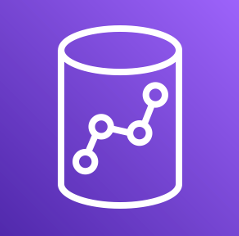
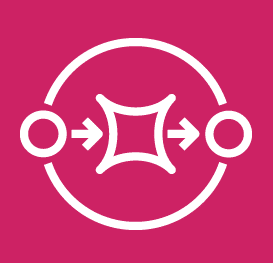
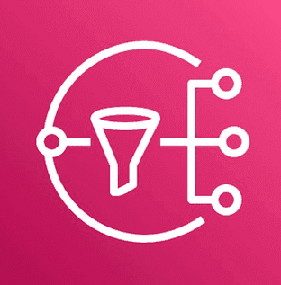
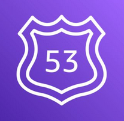

Technical Skills
Programming Languages & SDKs
Python
Java
JavaScript
TypeScript
Kotlin
 AWS CDK
AWS CDK
Shell Scripting
FastAPI
Flask
Node.js
AWS & Cloud Infrastructure
 AWS Lambda
AWS Lambda
 Amazon EventBridge
Amazon EventBridge
Amazon S3
Amazon VPC
 AWS CloudFormation
AWS CloudFormation
Amazon EC2
Docker
Kubernetes
 AWS Amplify
AWS Amplify
React
Data & Analytics
 Amazon DynamoDB
Amazon DynamoDB
Kafka
 Amazon Athena
Amazon Athena

Amazon Redshift
 Amazon QuickSight
Amazon QuickSight
 AWS Step Functions
AWS Step Functions

Amazon SQS
 Amazon API Gateway
Amazon API Gateway

Amazon SNS
 AWS AppSync
AWS AppSync
Amazon Aurora
GraphQL
REST
MongoDB
MySQL
DevOps & Architecture
Git
Jenkins
SonarQube
 AWS IAM
AWS IAM
 AWS KMS
AWS KMS
Microservices
Serverless
OpenTelemetry

Amazon Route 53